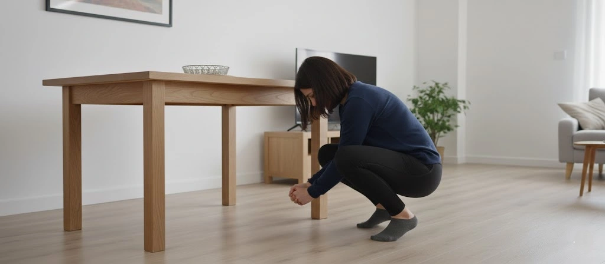
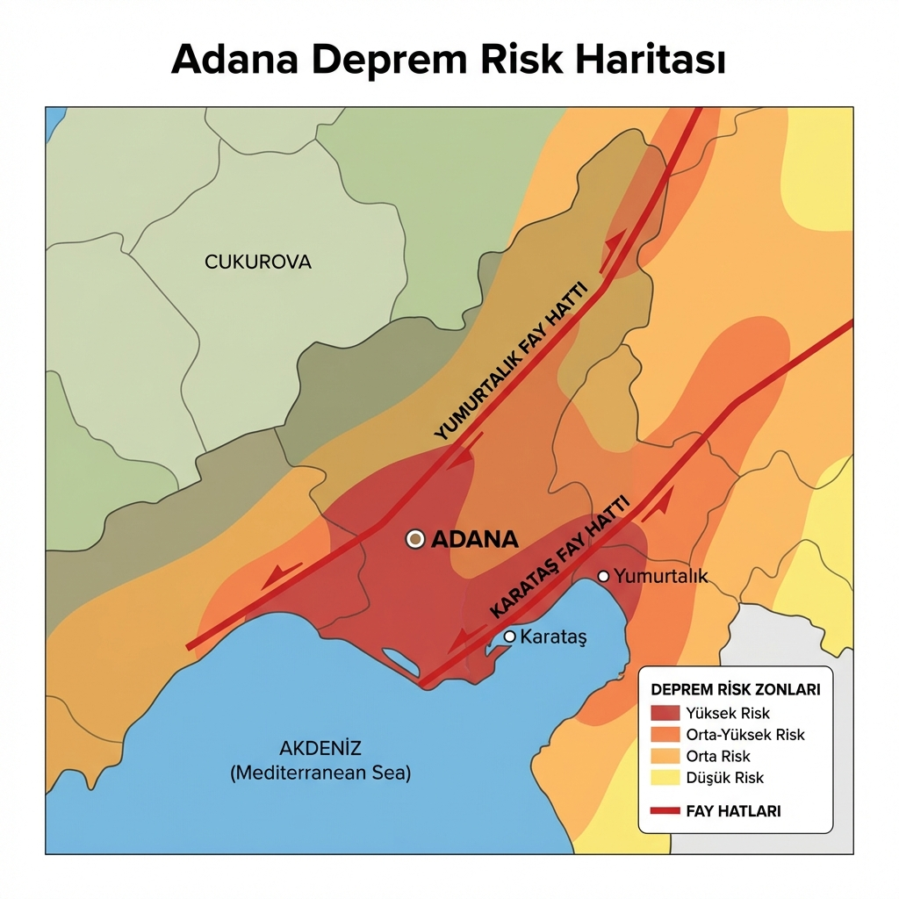

Adana'da Az Önce Deprem Oldu mu?
Deprem Anında Üç Adım: Çök, Kapan, Tutun

Veriler yükleniyor...
Son Adana Depremleri
| Tarih/Saat | Büyüklük | Derinlik | Konum |
|---|---|---|---|
| Kayıtlar yükleniyor... | |||
Adana Deprem Riski ve Ceyhan Fayı

Adana, Doğu Anadolu Fay Hattı'nın güneybatı uzantıları ile Akdeniz içerisindeki dalma-batma zonunun etkisi altındadır. 1998 Ceyhan depremi, bölgedeki yapı stokunun zayıflığını ve alüvyon zeminin sarsıntıyı büyütme etkisini acı bir şekilde göstermiştir. Özellikle Karataş ve Yumurtalık fayları, potansiyel risk kaynaklarıdır.
Şehrin Çukurova gibi kuzey ilçeleri görece daha sağlam zemin üzerinde olsa da, Seyhan ve Yüreğir'in nehir kıyısındaki mahallelerinde zemin sıvılaşması riski yüksektir. Bu bölgelerde yaşayanların binalarının bodrum katlarını rutubet ve korozyon açısından düzenli kontrol etmesi önerilir.
Adana Toplanma Alanları
AFAD'ın resmi e-Devlet sorgulama ekranını kullanarak size en yakın park ve açık alanları öğrenin.
Adana İçin Hazırlık Tavsiyeleri
- Yaz aylarında deprem çantasına ekstra su koyun; Adana sıcağında dehidrasyon riski yüksektir.
- Yüksek katlı apartmanlarda yaşayanlar, asansör yerine merdiven tatbikatları yapmalıdır.
- Seyhan Nehri yakınlarındaki yapılar için zemin etüdü raporlarını kontrol ettirin.
- Kırsal mahallelerde tarım ilacı depolarının güvenliğini sağlayın (kimyasal sızıntı riski).